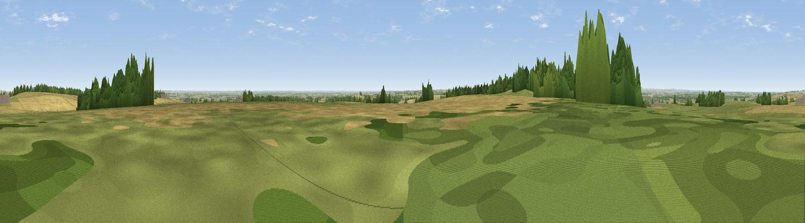
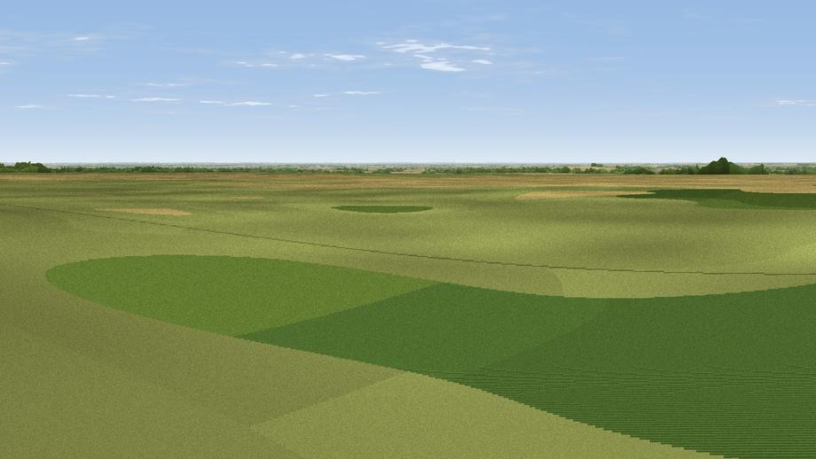

Castle Hill
#17132 in England · top 11% of its area beats it · near GroveThe view, rendered

A 360° render of this exact spot computed from the terrain model, tree cover and land cover — summer colours, afternoon light, calibrated against photographs of famous viewpoints. Real trees, hedges and buildings will differ in detail.
Through the camera

Rendered views along the best direction of this panorama.
The panorama
Grey silhouette: terrain skyline in each direction (720 bearings, Earth curvature and refraction included). Dashed green: skyline with trees (+15 m) and buildings (+8 m) as obstacles. Blue strip: how far the ground is visible on each bearing.
Where the view opens
Wedge length = distance to the farthest visible ground on that bearing (vegetation-aware). Rings at 10, 25 and 50 km.
What fills the view
59% cropland · 26% grassland · 11% woodland · 4% built-up
Angular shares of the visible panorama (visual magnitude), not map area. Landscape diversity 0.46 (0–1 Shannon).
Key numbers
More beautiful places nearby
The staircase of upgrades: each row has a higher view potential than everything closer. Driving times are estimates from straight-line distance, calibrated against real road routing — check an actual route before setting out.
| Place | Direction | Drive | Score |
|---|---|---|---|
| Viewpoint near Gringley on the Hill | N · 10 km | ~19 min | 59.3 |
| Beacon Hill | N · 10 km | ~20 min | 65.7 |
| Burstheart Hill [Thoresby Colliery] | SW · 17 km | ~29 min | 69.3 |
| Viewpoint near Maltby | WNW · 23 km | ~38 min | 70.8 |
| Viewpoint near Claxby | ENE · 40 km | ~59 min | 71.5 |
| Viewpoint near Oughtibridge | WNW · 44 km | ~64 min | 72.5 |
| Viewpoint near Wharncliffe Side | WNW · 46 km | ~66 min | 75.2 |
| Tissington Hill | WSW · 65 km | ~88 min | 75.5 |
53.31759, -0.88464 · source: dobih hill · position refined by local search. Computed location — check access rights before visiting.